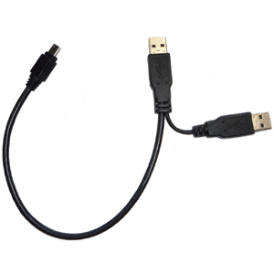

I cut the board in half, where the power/midi section joins to the rest of the board. I wanted to mount the power section somewhere else in my amp head using some metal 6mm threaded screws and nuts, so i widened the holes with a drill. When i started to tighten the locking nuts, i guess the power and ground planes were shorted together through the threaded screw, and now U1 (the 5V regulator) no longer outputs a regulated 5V. Needless to say, I'm working with stone knives and bear skins, but learn from my mistakes, nonetheless. Also, if the next version of the board could have at least some of a gap (a few millimeters...?) between the mounting holes and the power/ground planes, I'm sure there will be at least a few of us who would appreciate it... 
Do not try to widen the mounting holes in the power section
sounds bad.
Does the Axoloti work over USB without the power part(blinking, loading new patches)? If yes, I maybe know a solution.
Yeah, that works fine, it's just that the voltage regulator is totally unresponsive. perhaps there is still a short upstream of the VR input which i was not able to remove.
what do you propose I do to alleviate this? just use another 5V regulator?
You can split the usb cable 2x USB A & 1x Microusb: one USB A with data lines + GND, the other USB A with VDD + GND and USB A+B are connected to a Microusb for axoloti… The USB A POWER Section can be plugged to a USB power supply and the USB A data to yout computer…Somoething similar to cable which are often used for external harddrive powering (but isolated VDD).

or check the power circuit (page 3) of my euxoloti project.
But also remind Johannes notes: Euxoloti for axoloti (Eurorack Module):
Hope this may help you.
Successful slight enlargement of Axoloti mounting holes --
Hi there, I realize this post was more than a year ago but I wanted to contibute something on the topic of hole-widening. I have just widened my holes to the diameter of a #6-32 screw. There was no problem at all, but I would not use a screw any larger than this. On the top of Axoloti board #6-32 screw head clears any vias and components, but even a washer much wider than this may be wide enough to touch an SMT component.
How to tell if it's OK? I have board revision 1.2. If you hold the Axoloti up to a bright light, you can see through the board in all places where there is no copper plane. If there is copper plane in any layer, it will fully block the light. So with this method you can see what the tolerance can be for widening or altering the holes. It's not much, but there appears to be some.
Edit: For users in metric countries: the #6-32 screws I am using have a major diameter of 3.4 mm and a head diameter of 6.5 mm. But I certainly would not widen holes any more than to 3.4 mm!
Keep in mind that the two internal layers of the 4 layer board are for power. They are very (!) close together and its very easy to short them out when you drill through the board. Your method (hold against a bright light) is good for preventing damage